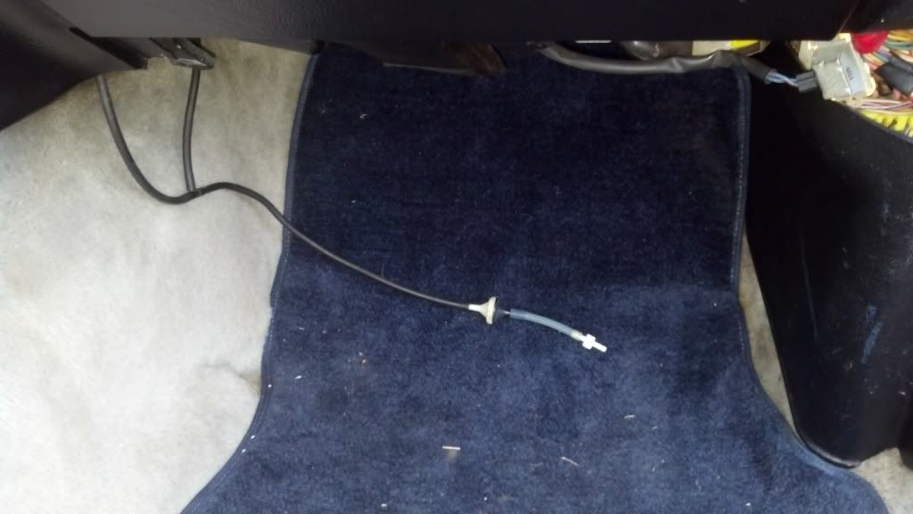
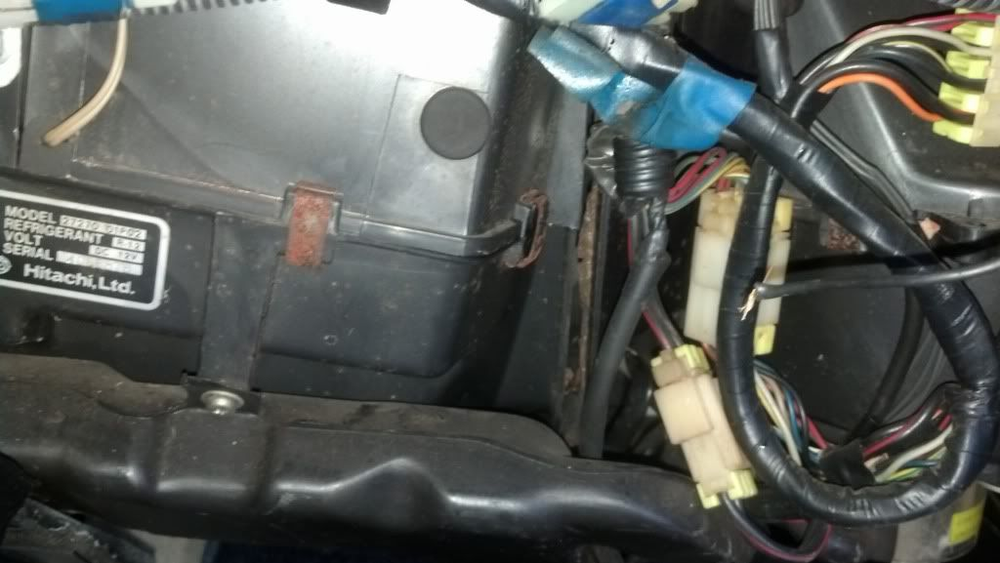
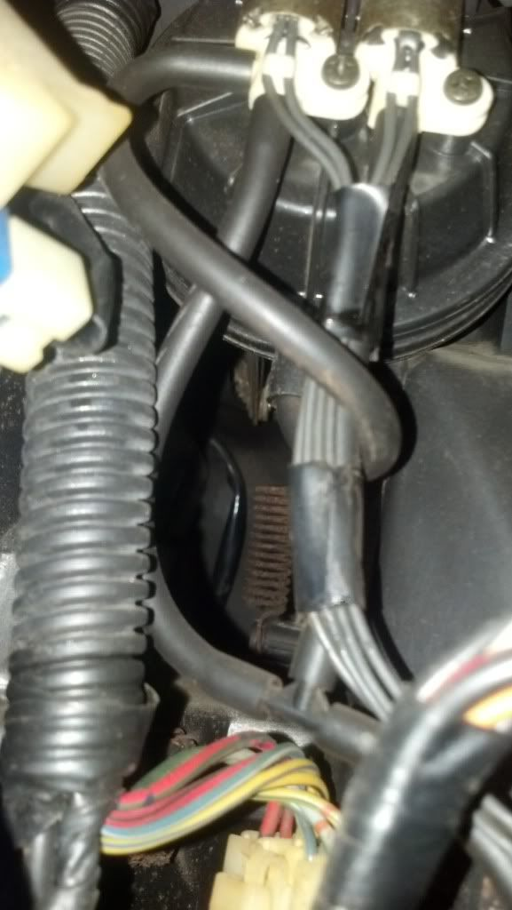

-
So I'm at a loss here. I'm not sure how but one of the vacuum lines beneath the glove box got pulled loose and I can't figure out where it connects to. I've looked through the schematics in the service manual and can't make sense of it when it comes to this hose.

That's the hose in question. I'm not sure if it's been tampered with by a PO or not but if so that could explain why I can't figure out how to route it. Only thing out of the ordinary as far as heating goes is that my gf said that only cold was blowing out the passenger floor however it was hot on the driver side.私♥フェアレディ・ゼット
・1984 300zx N/A -
it has been tampered. thats an aftermarket check valve. now as to where it goes, if you already have your vac supply, then that probably goes to the recirculation actuator (a common failure point).
okay, looked at pic again, yes that definately goes to the recirc. chances are, the previous owner caught it leaking, and this was his band aid fix for it.
as for your hot/cold problem, you would have to remove most of the dash and hvac piping, then replace the vac hoses leading from the firewall to all the actuators, and the smaller vac lines on the heater box itself. now if it is auto or manual climate, the process may change a little, either way, its a pita.
hers a pic of a manual heater box (removed from vehicle for easier hose replacement) the line going off to the right, thats the source line from the tee in your picture. to the left is box, to the right is recirc.
http://s1083.photobucket.com/user/Mi…63823.jpg.html
http://s1083.photobucket.com/user/Mi…7bf36.jpg.html
i have an auto box, but its currently inside a z with no promise of coming out soon.
back on topic, replace all the lines, one at a time, making sure they hold vacuum to each corresponding actuator.
i suggest removal, for ease of access and so you can see if anything is broken inside the box causing wierd responses.
Project Black Betty

-
Thanks mizagyu. It is a manual system. I was hoping to avoid having to mess with the box. Not looking forward to pulling the dashboard again but it needs to be done (suspect an a/c leak somewhere back there). So where does the recirc. plug back in at. It was plugged in and working fine not even a month ago. Somehow it came loose and have no clue where to plug it back in at.私♥フェアレディ・ゼット
・1984 300zx N/A -
the actuator is right behind the glove box on an automatic system and can be replaced by just pulling the glove box.Life's short
Go fast
Have a blast
Leave a good looking corpse -
^yep. And really, if youre patient and creative, you can replace the vac. lines without pulling the dash at all.Damn dirty angels....these cars!
Current Daily Driver - 86 Turbo.
Under the cover - THE BANANA… that needs to be re-energized.
sigpic -
If you decide to take the box out, id say replace the heater core and evaporator core while you have it out, so you don't have to later down the road. Others are right about the recirc being behind the glovebox, any way you go its not a fun job. Just replace all the actuators with new and call it good. Its expensive buy guaranteed. I think nissanparts.cc still has them, last i checked. About a month ago..
Project Black Betty
-
Thanks, that's good to know. I haven't gotten a chance to work on it yet but I'm hoping to have some time in the next few days. I planned to replace them if I ever have to pull the dash again, didn't have the money the first time. Checked nissanparts.cc and couldn't find the actuators under HVAC are they listed elsewhere?私♥フェアレディ・ゼット
・1984 300zx N/A -
Figured I'd give a bit of an update. Found the hose, it had split and fallen out before and someone had taped it back together. Got it holding for now until I get a decent day to actually climb under my dash. As for the cold air issue, I noticed this while I was hunting the hose down.

Right side of the box looks like its separated and with blower running it just blows cold air out. Looks like I'm pulling the dash after all and reconditioning the whole thing.私♥フェアレディ・ゼット
・1984 300zx N/A -
Messed with the line some more and traced it back up to where the broken line connects. Found something I think is odd.

Those two hoses shouldn't be spliced together should they. I'm guessing the 2 hoses that are spliced in the first picture are supposed to connect here and this was someones "fix".私♥フェアレディ・ゼット
・1984 300zx N/A

Copyright © 2006–. All rights reserved. Privacy Policy